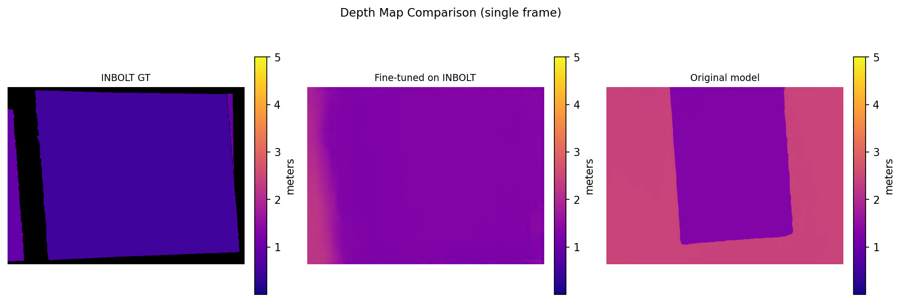
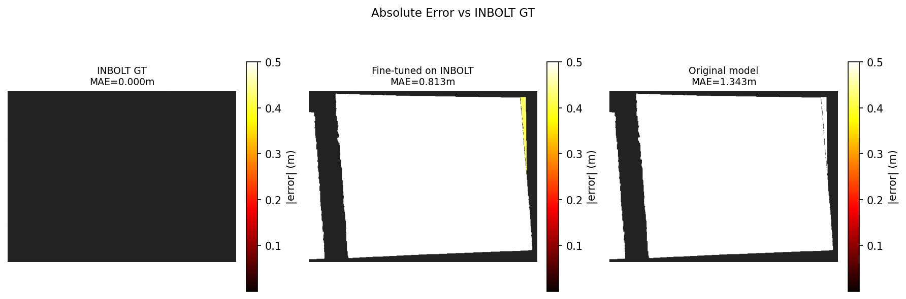
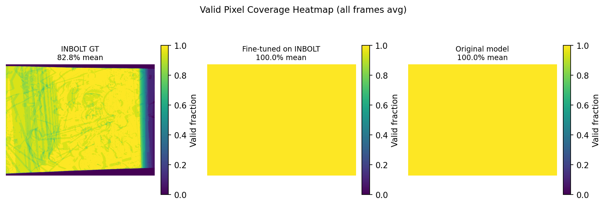
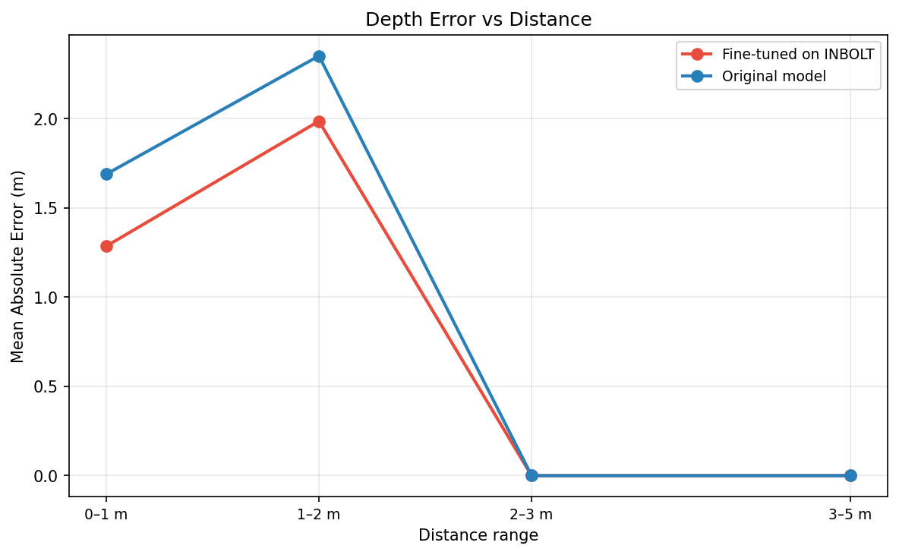
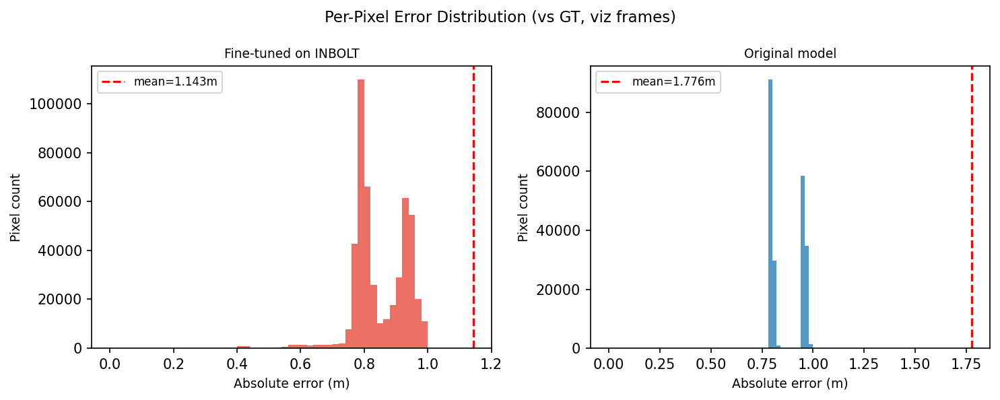
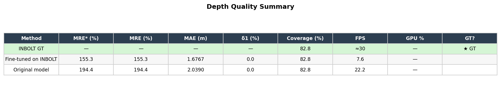
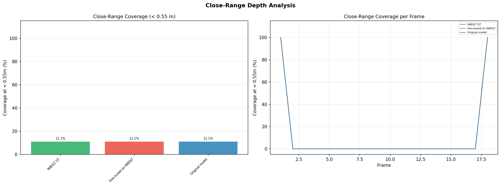
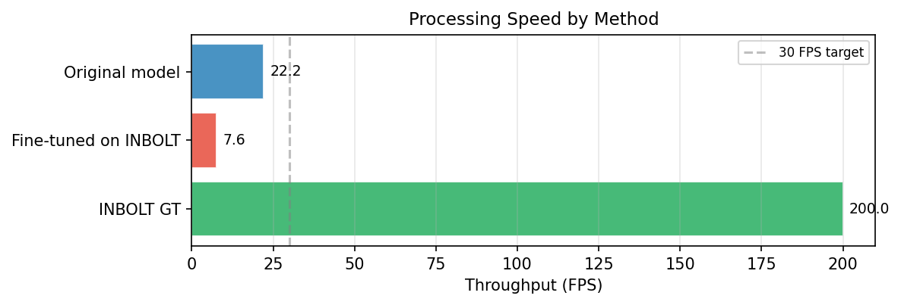

rs-enhanced-depth — multi-method depth quality analysis
| Method | max_disp | valid_iters | Engine Resolution | Engine Dir |
| Original model | — | — | — | — |
| Fine-tuned on INBOLT | — | — | — | — |

Side-by-side depth maps from a single representative frame. Invalid pixels are black.

Per-pixel absolute error |pred − GT| clipped at 0.5 m. Brighter = more error.

Fraction of frames each pixel has valid depth, averaged over all benchmark frames.

Mean Absolute Error (MAE) broken down by distance range.

Distribution of per-pixel absolute errors from the stored visualisation frames.

Aggregate quality metrics — see legend below the table for column explanations.
| MRE* (%%) | Overall score (recommended). Mean Relative Error with hole penalty — pixels where the method has no depth but ground truth does count as 100%% error. This is the fairest single metric because it penalises both inaccuracy and missing coverage. Lower is better. |
| MRE (%%) | Mean Relative Error over valid pixels only (holes ignored). 5%% means each measured pixel is ~5%% off on average. Lower is better. |
| MAE (m) | Mean Absolute Error in meters, valid pixels only. Lower is better. |
| δ1 (%%) | Percentage of valid pixels within 1.25× of ground truth depth. Higher is better. 100%% is perfect. |
| Coverage (%%) | Percentage of pixels that produced valid depth. Higher is better. MinZ improves this at close range (<0.55m) by filling holes the hardware camera cannot see. |
| FPS | Processing speed (frames per second). Higher is faster. |
| GT? | ★ GT marks the ground truth method (NNDepth accurate). Its error columns show "—" because you don't compare ground truth to itself. |

Coverage and stability for objects closer than 0.55 m. Highlights MinZ benefit.

Processing speed in FPS. Hardware baseline is fixed at ~30 FPS (camera frame rate).